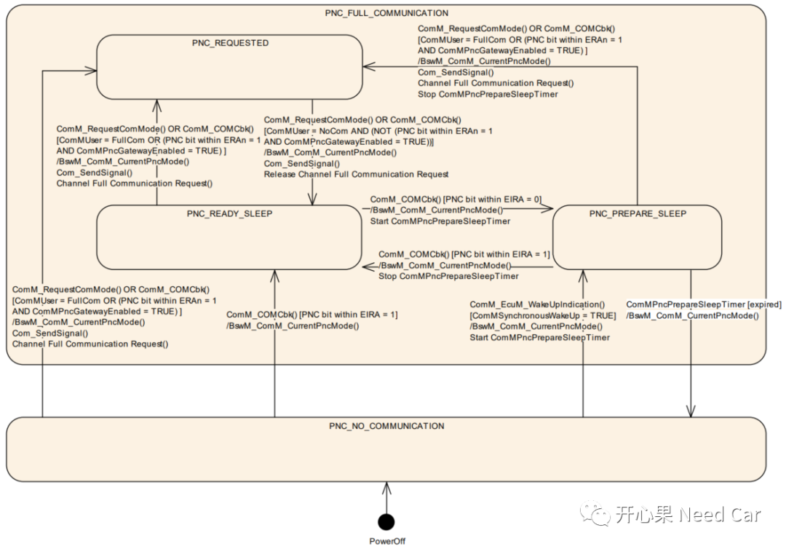

上一篇我们从CanNM模块分析PN功能，本篇接着从ComM模块分析。因为网络管理的PN功能主要由这两个模块控制。不清楚CanNM模块与PN关系的可以参阅前文Autosar网络管理：从CanNM模块看Partial Networking。
对于每一个PNC（partial network cluster）的通信状态，ComM模块都有独立的一套状态机进行管理。当CanNM从CanIf层拿到NM PDU以后，会将User Data部分数据独立拆解出来，通过PDUR、COM，以信号的形式最终送给ComM模块。为什么将User Data部分独立拆解出来？因为User Data部分包含着PNC信息，该信息取决于项目需求：需要多少PNC，就开辟多少User Data空间。也就是说，ComM获取的PNC信息与NM PDU中User Data 一一对应。
使能或是关闭PNC，最终的表现就是允许PNC关联的Node（或者说Channel）通信与否。我们知道应用报文（Com层对应的Pdu）的发送/关闭由BswM管控，如果ECU收到的PNC关联其对应的某个Channel，ComM模块就会进行通信请求（进行状态切换），BswM获取请求信息后，使能或者禁止Com层对应的I-PDU groups通信。
前面我们说PN功能开启需要在CanNM模块打开CanNmPnEnabled参数，而在ComM模块还需要将配置参数ComMPncSupport打开。在Autosar中，规定CanNmPnEnabled和ComMPncSupport需要存储在NVM中，以便诊断服务使用，但是在实际的项目开发中，是否这样实现还是需要看具体项目需求。
ComM管理每一个PNC状态的切换，当状态切换时，均需要通过接口BswM_ComM_CurrentPncMode()通知到BswM，以便BswM对Com层的I-PDU groups进行通信的管控。ComM在管控每个PNC状态机之前，首先要获取对应Channel的PNC信息，PNC信息通过Com层标准信号接口获取ERA signal或者EIRA signal。如果signal是多字节的，一般会在Com层配置成uint8_n类型。Autosar里规定PNC对应的信号，最大可以包含56个PNC状态位信息，这最大56是如何来的呢？对于一个经典CAN帧，一个PDU中最多携带8 byte有效数据，在CanNM模块中，CBV字节是必须的，而NodeID是可选则，这样在CanNM层级最多可以有7 byte的User Data，因此ComM最多可以管控7*8 = 56个PNC。虽然NodeID在CanNM是可选的，但还是要识别和过滤NM PDU，当NodeID在CanNM可选时，可以依赖xxIf层或者驱动层对NM PDU过滤和识别，驱动层负责将有效ID范围的NM PDU送给xxIf层，xxIf层通过识别ID，负责将该PDU发送给对应的上层，比如：xx_TP层，xx_NM层等。
一直在说ComM通过信号获取对应的PNC信息，这里我们再具体说一下，对ComM来说，获取的是 EIRA 或者 ERA信号，这两个信号独立。可以使用其中一个，也可以均使用，ComM通过Com_ReceiveSignal()接口获取。
ComM既然会接收信号，当然也会将PNC状态信息通过信号发送给对应的通信总线。
ComM模块可以处理EIRA 或者ERA信号的接收，但是发送只能处理EIRA信号。
对于每个Partial Network，会对应一个PNC状态机，因为PNC最多可以有56个，因此ComM最多可以管理56个PNC状态机。注意：PNC和ComM层的Channel不是一个概念，ComM的Channel对应具体的物理总线数。
在ComM模块中，一个Channel可以对应一个PNC，也可以对应多个PNC。
ComM管理的PNC状态机包括两大Mode：PNC_FULL_COMMUNICATION、PNC_NO_COMMUNICATION。PNC_FULL_COMMUNICATION模式又包含三个子状态：PNC_PREPARE_SLEEP、PNC_READY_SLEEP、PNC_REQUESTED。

对上图状态行为进行解读：
PNC_NO_COMMUNICATION主状态行为
系统上电时，PNC默认状态即PNC_NO_COMMUNICATION。如果某个PNC进入PNC_NO_COMMUNICATION状态后，没有收到内部或者外部请求，则状态不跳转。（1）EcuM或者NM模块调用ComM_EcuM_WakeUpIndication()接口,且配置参数ComMSynchronousWakeUp = TRUE，PNC的状态由PNC_NO_COMMUNICATION切换到PNC_FULL_COMMUNICATION::PNC_PREPARE_SLEEP状态。且该PNC对应的ComMPncPrepareSleepTimer（ComMPncPrepareSleepTimer > 0）启动，同时通知到BswM，PNC状态切换。（2）EcuM模块调用ComM_EcuM_WakeUpIndication()接口,且配置参数ComM_PncWakeUpEnabled = TRUE ,PNC的状态由PNC_NO_COMMUNICATION切换到PNC_FULL_COMMUNICATION::PNC_PREPARE_SLEEP状态。且该PNC对应的ComMPncPrepareSleepTimer启动（ComMPncPrepareSleepTimer > 0），同时通知到BswM，PNC状态切换。（3）如果PNC请求信号收到（至少一个bit在EIRA 中置位），PNC的状态由PNC_NO_COMMUNICATION切换到PNC_FULL_COMMUNICATION::PNC_READY_SLEEP 状态。
（4）如果ComMUser调用ComM_RequestComMode()接口请求 FULL_COMMUNICATION，PNC的状态由PNC_NO_COMMUNICATION切换到PNC_FULL_COMMUNICATION::PNC_REQUESTED 状态。
（5）如果PNC请求信号收到（至少一个bit在ERA 中置位），AND ComMPncGatewayEnabled = TRUE，AND ComMPncGatewayType != NONE。PNC的状态由PNC_NO_COMMUNICATION切换到PNC_FULL_COMMUNICATION::PNC_REQUESTED 状态。PNC_FULL_COMMUNICATION主状态行为
该状态下，所有与此PNC关联的通道均进入Full Communication状态。
进入PNC_PREPARE_SLEEP子状态工况：此PN的所有ComMUser请求COMM_NO_COMMUNICATION， AND 接收到的EIRA信号PNC置位 ，AND 所有的ERA信号PN未置位，且此PN是同步的。
使能PNC的网关功能，需要在ComM中配置参数ComMPncGatewayEnabled = TRUE。默认的网关类型是：COMM_GATEWAY_TYPE_ACTIVE。PNC的网关类型分为：Active PNC Gateway和Passive PNC Gateway 两种。
ComM通过ERA或者EIRA与其他ECU交互PNC信息。对于ERA，仅当PNC网关功能开启，分配给多个ComM通道时可用。每个PNC在位向量中使用相同的位位置，由 PNC ID 定义。比如：定义PNC1、PNC2，这两个PNC均长度均为2 byte，其中bit0均表示关联某个ECU的指定Channel与否。ComM负责协调网络的网关行为，即将PNC激活请求从一个通道路由到其他通道。通过发送 EIRA TX 信号完成路由。通道的路由取决于该通道的网关类型。
如果在网关类型为PASSIVE的通道上接收到ERA=1的请求，则该请求不会镜像回该通道，即该请求不会在EIRA Tx 信号中设置，并且不会路由到网关类型为PASSIVE的通道。请求仅路由到网关类型为ACTIVE 的通道。如果在网关类型为 ACTIVE 的通道上通过 ERA=1接收到PN请求，则该请求会镜像回此通道，且路由到所有其他协调通道。如果在网关类型为NONE的通道上通过ERA=1接收到请求，则该请求不会存储在内部ComM ERA信号中，即该PNC请求被忽略。因此，请求不会镜像回此通道，也不会路由到任何其他通道，即请求不会设置在EIRA发射信号中。网关类型为NONE的通道忽略通过ERA信号接收的PNC请求，但它们处理通过 EIRA Rx 信号接收的PNC请求。在这种情况下，目标PNC状态不受通过 ERA 接收的PNC请求影响，但通过EIRA=1 接收的 PNC 请求而进行状态改变。